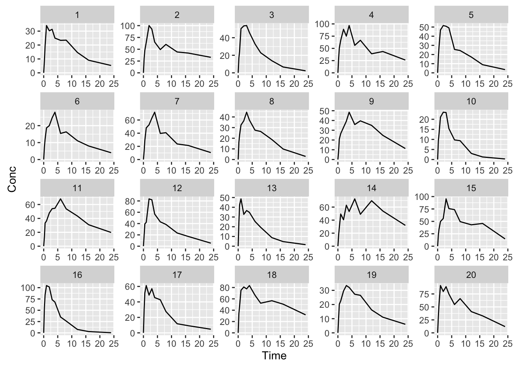
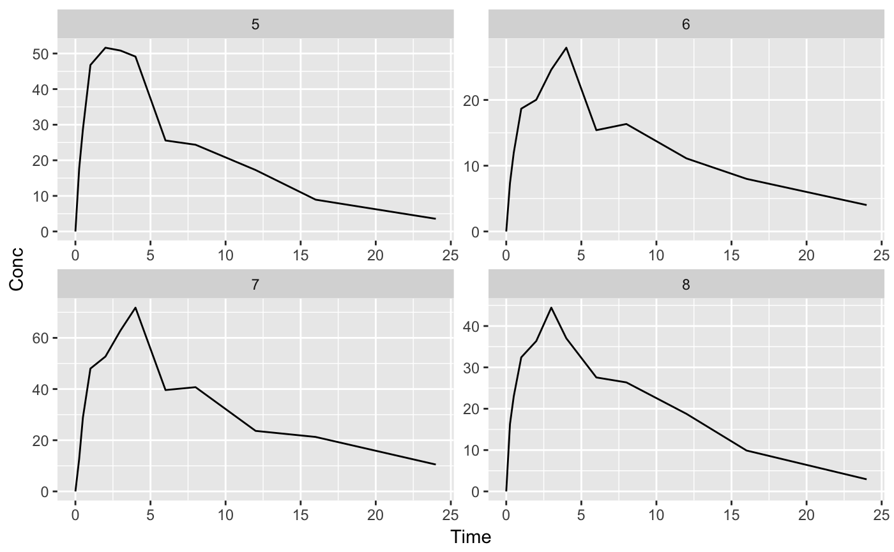
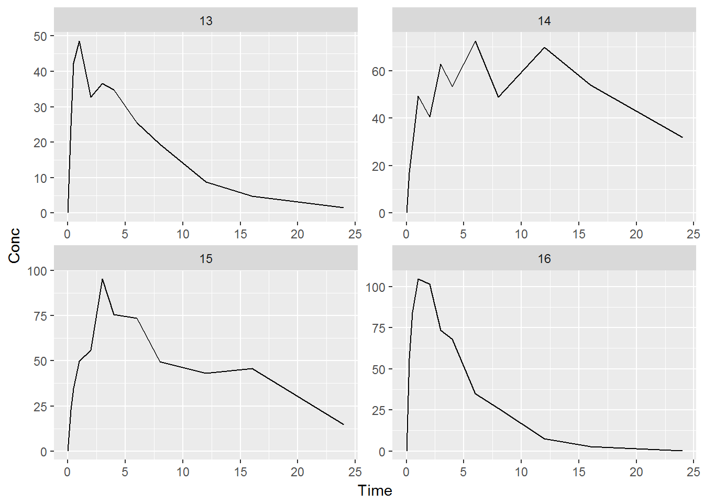
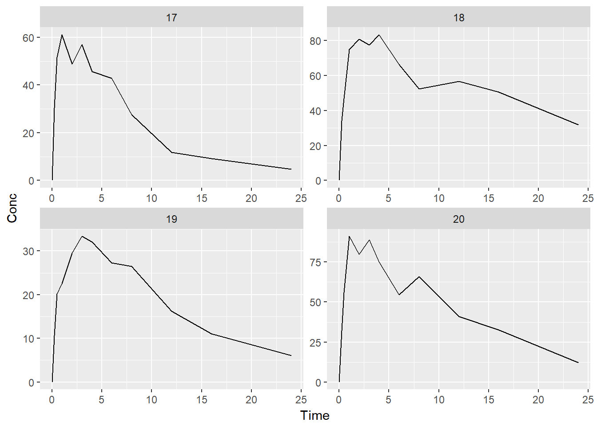
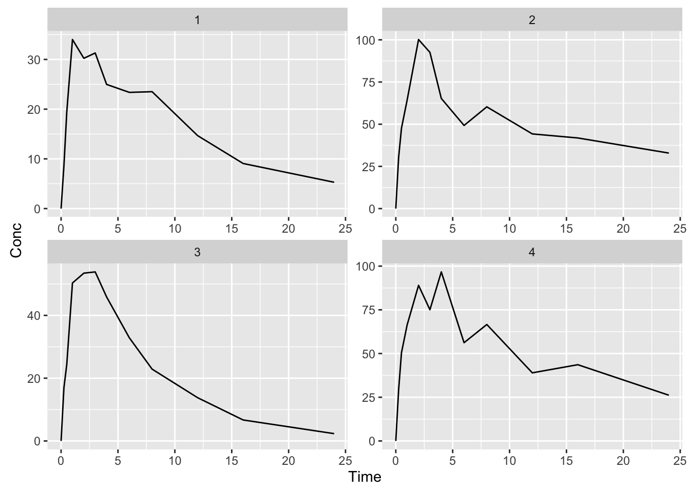
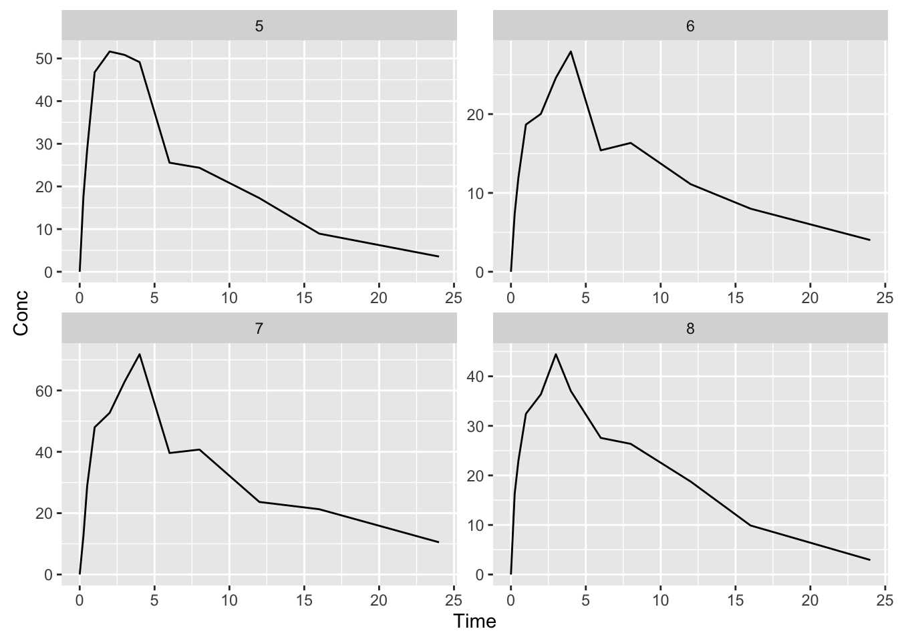
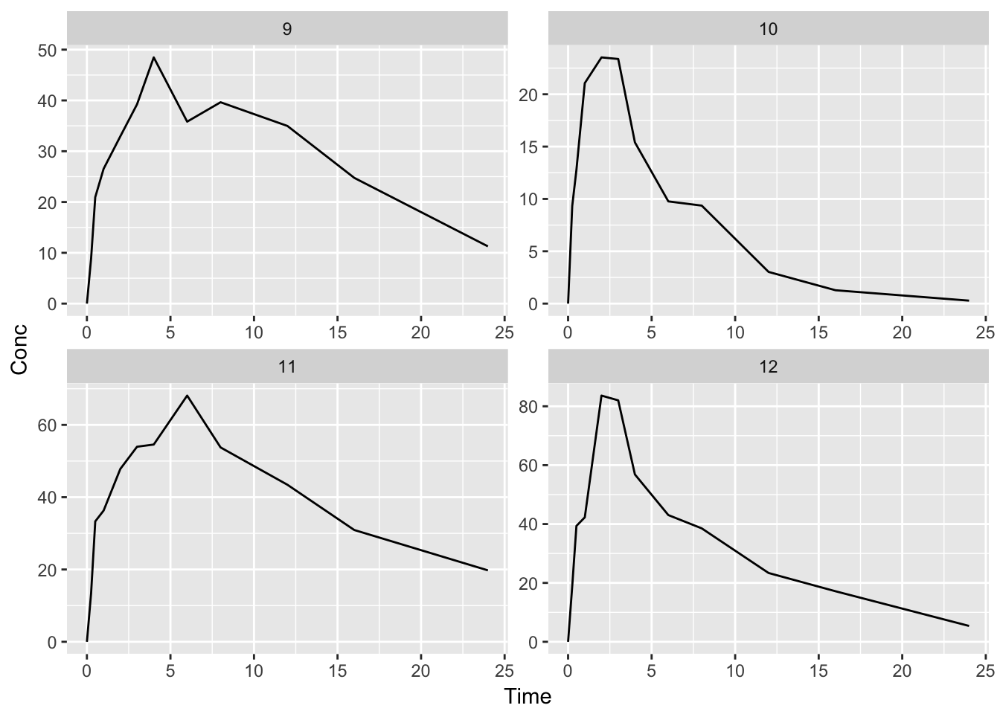
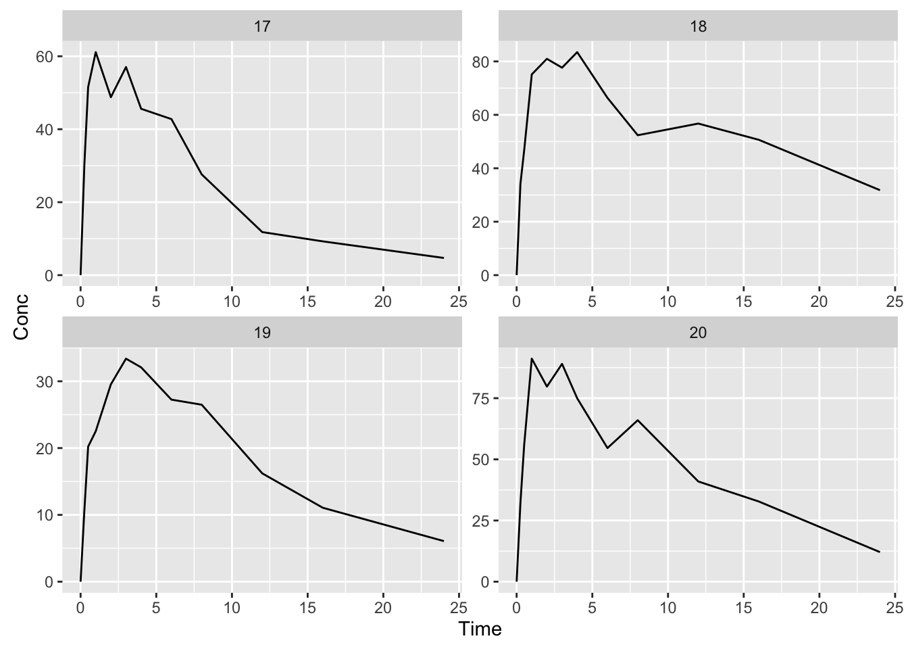

library(PKPDmisc) # for binning and other functions
library(PKPDdatasets) # example dataset
library(ggplot2) #plotting
library(purrr) # dataset to handle lists##
## Attaching package: 'purrr'## The following objects are masked from 'package:dplyr':
##
## contains, order_bysuppressMessages(suppressWarnings(library(dplyr)))dat <- sd_oral_richpk %>% filter(ID <= 20)Messy plot can’t see individuals well
ggplot(dat, aes(x = Time, y = Conc, group= ID)) +
geom_line() +
facet_wrap(~ID, scales= "free")
What we’d like to be able to do is split up into ‘bins’ of specified numbers of individuals to then plot out multiple plots
# this will automatically create a column of bins such that the
# specified number of individuals is in each bin, in this case
# 9 ids per bin
# split the original dataset into subdatasets corresponding to each bin (list of dataframes)
split_dat <- dat %>%
mutate(PLOTS = ids_per_plot(ID, 4)) %>% # default is 9 per subplot
split(.[["PLOTS"]])To handle plotting each subdataframe, you need to wrap your normal ggplot into a function. You will then apply this function with map to each subdataframe. So in this case it is just like a normal plot, but wrapped up in a function, which takes 1 argument (the dataframe) and outputs the plot
p_conc_time <- function(df) {
ggplot(df, aes(x = Time, y = Conc, group= ID)) +
geom_line() +
facet_wrap(~ID, scales= "free")
}To apply the above function we use map from purrr
split_dat %>% map(p_conc_time) ## $`1`##
## $`2`
##
## $`3`##
## $`4`
##
## $`5`
As you can notice from the vignette, there is still a code-based output separating each subplot, which is not ideal for reporting. As such, there is a special function print_plots in PKPDmisc that will clean up the output slightly. It also automatically restarts the page numbering if knitting to PDF to page 1, making it each to extract only the pages related to plots to embed cleanly in other reports.
To use print_plots we want to save the ggplot output (rather than let it be printed directly) and give that to print plots.
plot_list <- split_dat %>% map(p_conc_time) print_plots(plot_list)



## [[1]]
## NULL
##
## [[2]]
## NULL
##
## [[3]]
## NULL
##
## [[4]]
## NULL
##
## [[5]]
## NULLdevtools::session_info()## Session info -------------------------------------------------------------## setting value
## version R version 3.3.2 (2016-10-31)
## system x86_64, mingw32
## ui RStudio (1.1.38)
## language (EN)
## collate English_United States.1252
## tz America/New_York
## date 2017-02-13## Packages -----------------------------------------------------------------## package * version date
## assertthat 0.1 2013-12-06
## backports 1.0.5 2017-01-18
## BH 1.62.0-1 2016-11-19
## callr 1.0.0.9000 2016-12-29
## chron 2.3-47 2015-06-24
## colorspace 1.3-0 2016-11-10
## commonmark 1.1 2016-12-13
## crayon 1.3.2 2016-06-28
## data.table 1.9.6 2015-09-19
## DBI 0.5-1 2016-09-10
## desc 1.0.1 2016-09-23
## devtools 1.12.0.9000 2016-12-29
## digest 0.6.11 2017-01-03
## dplyr * 0.5.0 2016-06-24
## evaluate 0.10 2016-10-11
## ggplot2 * 2.2.0 2016-11-11
## gtable 0.2.0 2016-02-26
## highlight 0.4.7 2015-04-20
## htmltools 0.3.5 2016-03-21
## knitr 1.15.1 2016-11-22
## labeling 0.3 2014-08-23
## lazyeval 0.2.0 2016-06-12
## magrittr 1.5 2014-11-22
## memoise 1.0.0 2016-01-29
## munsell 0.4.3 2016-02-13
## pkgbuild 0.0.0.9000 2016-12-29
## pkgdown 0.1.0.9000 2016-12-29
## pkgload 0.0.0.9000 2016-12-29
## PKPDdatasets * 0.1.0 2016-11-18
## PKPDmisc * 0.4.5 <NA>
## plyr 1.8.4 2016-06-08
## purrr * 0.2.2 2016-06-18
## R6 2.2.0 2016-10-05
## Rcpp 0.12.9 2017-01-14
## readr 1.0.0 2016-08-03
## reshape2 1.4.2 2016-10-22
## rmarkdown 1.3 2016-12-29
## roxygen2 5.0.1.9000 2016-12-29
## rprojroot 1.2 2017-01-16
## scales 0.4.1 2016-11-09
## stringi 1.1.2 2016-10-01
## stringr 1.1.0 2016-08-19
## testthat 1.0.2.9000 2016-12-29
## tibble 1.2 2016-08-26
## whisker 0.3-2 2013-04-28
## withr 1.0.2 2016-06-20
## xml2 1.0.0.9002 2016-12-29
## yaml 2.1.14 2016-11-12
## source
## CRAN (R 3.3.2)
## CRAN (R 3.3.2)
## CRAN (R 3.3.2)
## Github (mangothecat/callr@3007ba2)
## CRAN (R 3.3.2)
## CRAN (R 3.3.2)
## CRAN (R 3.3.2)
## CRAN (R 3.3.2)
## CRAN (R 3.3.2)
## CRAN (R 3.3.2)
## CRAN (R 3.3.2)
## Github (hadley/devtools@1ce84b0)
## CRAN (R 3.3.2)
## CRAN (R 3.3.2)
## CRAN (R 3.3.2)
## CRAN (R 3.3.2)
## CRAN (R 3.3.2)
## CRAN (R 3.3.2)
## CRAN (R 3.3.2)
## CRAN (R 3.3.2)
## CRAN (R 3.3.2)
## CRAN (R 3.3.2)
## CRAN (R 3.3.2)
## CRAN (R 3.3.2)
## CRAN (R 3.3.2)
## Github (r-pkgs/pkgbuild@65eace0)
## Github (hadley/pkgdown@f23ddb0)
## Github (r-pkgs/pkgload@def2b10)
## Github (dpastoor/PKPDdatasets@52880fa)
## local
## CRAN (R 3.3.2)
## CRAN (R 3.3.2)
## CRAN (R 3.3.2)
## CRAN (R 3.3.2)
## CRAN (R 3.3.2)
## CRAN (R 3.3.2)
## Github (rstudio/rmarkdown@3276760)
## Github (klutometis/roxygen@d2c7cfd)
## CRAN (R 3.3.2)
## CRAN (R 3.3.2)
## CRAN (R 3.3.2)
## CRAN (R 3.3.2)
## Github (hadley/testthat@3b2f225)
## CRAN (R 3.3.2)
## CRAN (R 3.3.2)
## CRAN (R 3.3.2)
## Github (hadley/xml2@78112cf)
## CRAN (R 3.3.2)